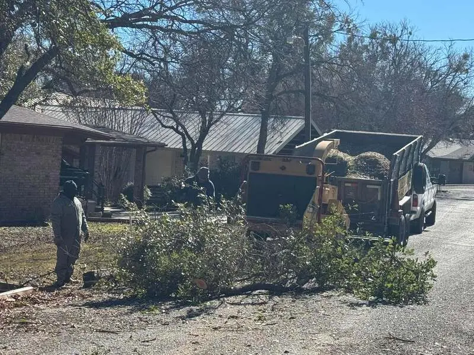

Storm damage · Brownwood
A tree split. A limb came down. Start safely.
SC Tree Service handles fallen limbs, split trunks and dangerous hangers left after Central Texas weather.

Before you approach the damage
Keep people and pets away from split trunks, loaded limbs and anything still suspended. Do not cut wood under tension. If a tree or limb is touching an active utility line, contact the utility provider or emergency services before tree work begins.
What to photograph from a safe distance
- The full damaged tree
- What the tree or limb is resting on
- The surrounding access area
- Your address or approximate location